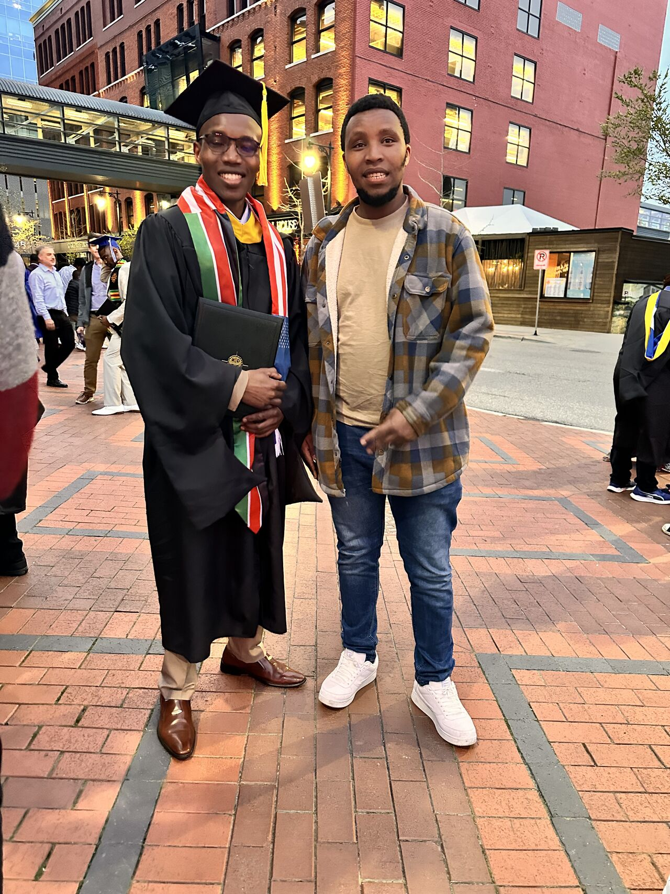
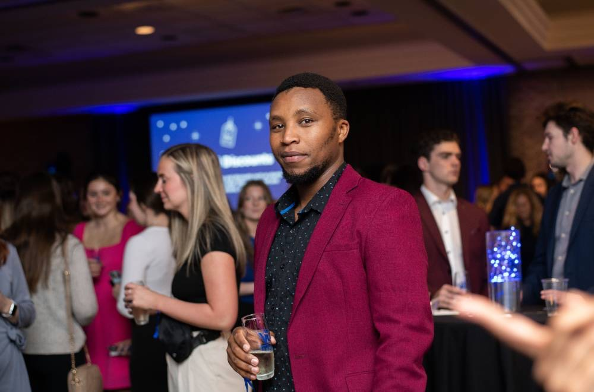

Our Gallery
A glimpse into our work and impact



We Are Friends Of Education
Young Initiative Whose Focus Is Supporting Students
Founder: “You can not understand the value of giving if you have never lacked.”
Friends of Education started as an idea in March 2024. It became an initiative in May 2024, with the goal of sponsoring just one student. The motivation came from my own experiences and challenges in pursuing education. When I returned home in February 2024 and spoke with students at my former high school—ten years after I graduated—I was reminded of how difficult it can be to access quality education. That moment made it clear to me that there was a real need for more accessible and affordable opportunities. The initiative is currently run by my former teacher, Mr. Kamara, who serves as the patron...
He is responsible for identifying students in the greatest need and ensuring that tuition payments are made directly to the schools. I continue to lead the initiative as the founder. Together, we support students by covering their tuition fees and providing essential learning materials such as books and uniforms. Since our inception, we’ve been able to support nine students, some of whom are total orphans, while others come from families that simply cannot afford to keep them in school. So far, I’ve raised a total of $730.15, entirely from my own contributions...
Two of our students have graduated from high school, and one has gone on to attend university—a milestone that fills us with pride. This year, we have five students in their final year of high school and two in their sophomore year. We take great pride in helping to turn these students’ dreams into reality—dreams that, without our support, might have remained out of reach. As a young and growing initiative, we are excited about the future and hope to expand both the number of students we support and the ways we continue to stand by them beyond high school.
A glimpse into our work and impact